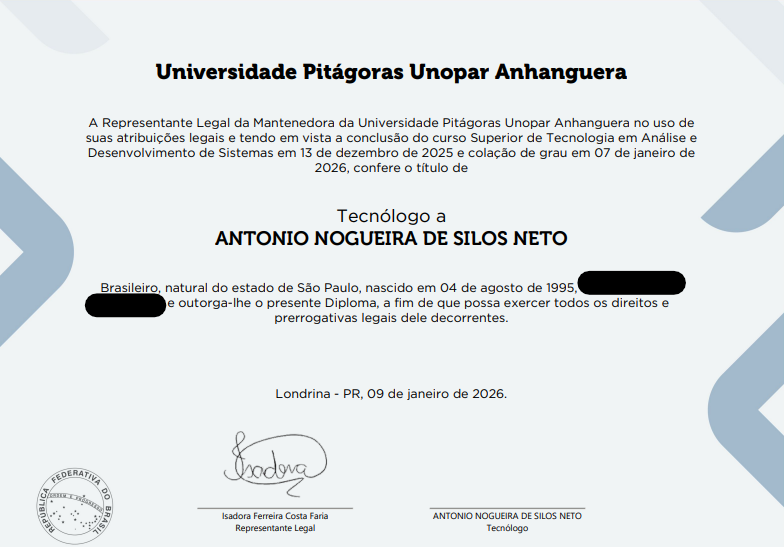
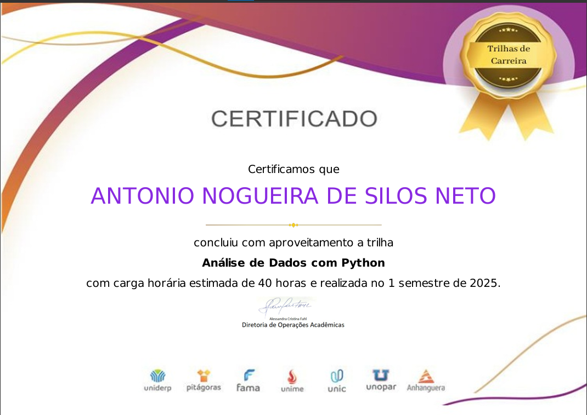
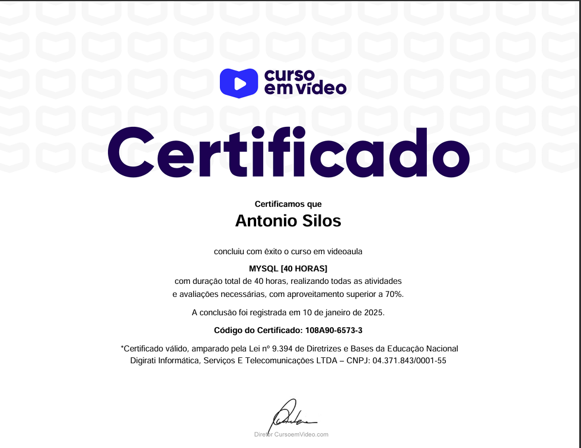
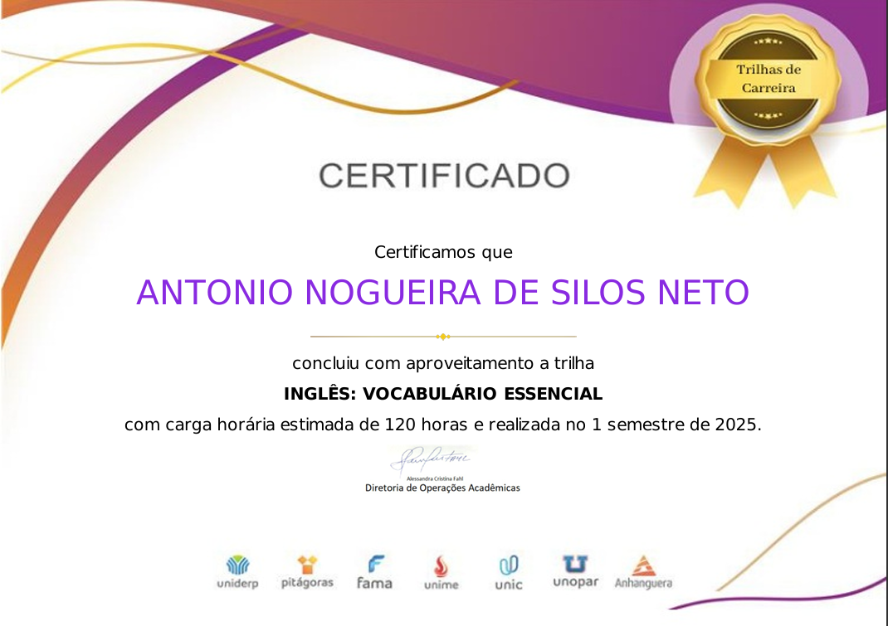

Sobre Mim
Sou um desenvolvedor Jr. apaixonado por tecnologia e criação de soluções interativas. Tenho experiência prática com Python, MySQL, HTML5, CSS3 e JavaScript, além de vivência com bibliotecas como Pygame, Pandas, Pyautogui, Playwright, e frameworks como Flask, Django e Bootstrap.
Minha trajetória profissional inclui atuação no levantamento de requisitos e contato direto com clientes, o que fortaleceu minha comunicação e visão analítica. Sou uma pessoa curiosa, criativa e focada, sempre em busca de aprender sempre mais e aprimorar minhas habilidades.
Meu objetivo é crescer na área de desenvolvimento de soluções capazes de gerar conexão e praticidade, aliando minhas competências técnicas à capacidade de compreender as necessidades dos usuários, para entregar experiências funcionais e intuitivas.
Stacks e Habilidades
Do front-end à IA, uno desenvolvimento e análise de dados para transformar ideias em soluções funcionais.
-
Desenvolvimento Frontend
Atuo no desenvolvimento de interfaces web responsivas e orientadas à experiência do usuário, utilizando HTML5, CSS3 e JavaScript. Tenho foco em código semântico, organização estrutural e boas práticas de desenvolvimento, sempre buscando alinhar estética, performance e clareza na navegação.
Desenvolvi projetos aplicando conceitos de responsividade, grids flexíveis e microinterações para criar experiências modernas e intuitivas.
Meu objetivo é construir interfaces que não apenas funcionem, mas que comuniquem valor, transmitam profissionalismo e contribuam diretamente para a percepção do produto. -
Desenvolvimento Backend
Desenvolvo aplicações web utilizando Python (Flask) com integração a bancos de dados relacionais (MySQL), construindo soluções completas que conectam frontend, regras de negócio e persistência de dados de forma estruturada e segura.
Tenho experiência em modelagem de dados, criação de schemas e escrita de consultas SQL otimizadas, garantindo consistência, desempenho e escalabilidade das aplicações. Já implementei autenticação de usuários, integração entre camadas da aplicação e estruturas organizadas seguindo boas práticas de arquitetura fullstack.
Busco desenvolver sistemas que não apenas funcionem tecnicamente, mas que tenham base sólida em estrutura de dados, segurança e organização, preparando o projeto para crescimento e manutenção futura. -
Arquitetura & Estrutura de Soluções
Antes de iniciar a implementação, priorizo a organização e o planejamento da solução, utilizando modelagem, definição de fluxos e estruturação em camadas para garantir clareza e eficiência no desenvolvimento.
Valorizo princípios como separação de responsabilidades, código limpo e organização arquitetural, buscando reduzir retrabalho e facilitar manutenção e escalabilidade.
Acredito que boas soluções não começam no código, mas na construção de uma base sólida que sustente crescimento, performance e evolução contínua do produto. -
Machine Learning e Análise de Dados
Tenho experiência com Python aplicado à análise de dados e Inteligência Artificial, desenvolvendo soluções que transformam dados em suporte estratégico para tomada de decisão. Já implementei projetos práticos, como um modelo de análise de perfil de crédito com IA, explorando conceitos de machine learning, estruturação de dados e validação de resultados.
Possuo experiência igualmente com automação, raspagem de dados e organização de informações para análise, integrando processos de coleta, tratamento e interpretação de dados.
Desenvolvi a habilidade de aplicar IA de forma responsável e orientada a problemas reais, utilizando tecnologia para gerar insights relevantes e impacto concreto em produtos e serviços.Ferramentas que domino
Meus Projetos
-
Desenvolvimento de uma landing page orientada à conversão, com foco em estruturação estratégica do conteúdo, hierarquia visual e otimização da experiência do usuário. Aplicação de boas práticas de HTML semântico, CSS moderno e interações com JavaScript para criar uma interface clara, fluida e funcional.
Tecnologias utilizadas:
Veja e acesse o projeto pelo meu Github


Landing Page para Terapeuta Holística
-
Página Web que desenvolvi para homenagear o minha esposa em seu aniversário. É responsiva e contém um quiz inicial que ao final irá direcionar para a página da homenagem. Foi meu primeiro projeto utilizando mais de uma página.
Tecnologias utilizadas:
Veja e acesse o projeto pelo meu GitHub Página de Presente de Aniversário
-
Projeto de backend no qual trabalhei com as bibliotecas Pandas e Scikit-learn. O projeto envolveu tratamento de dados que são analisados por um modelo de IA treinado para fornecer previsões de perfil de crédito para novos cliente.
Tecnologias utilizadas:
Veja o projeto pelo meu Github


IA para Análise de Dados
-
Um desafio que eu impuz a mim mesmo unindo minha paixão por game e o interesse em aprender mais sobre POO (Programação Orientada a Objetos). Com ele aprendi sobre a biblioteca Pygame, a forma correta de usar Classes e até sobre animação de sprites. Um projeto que ainda está inacabado, mas o qual ainda revisito sempre que quero praticar de uma forma muito divertida.
Tecnologias utilizadas:
🚧 Repositório em Desenvolvimento Jogo em 2D Usando Pygame
Formação Acadêmica
-
Análise e Desenvolvimento de Sistemas
UNOPAR Anhaguera - Araçatuba - SP
Formação sólida para atuar em desenvolvimento de software, com foco em análise de requisitos, modelagem de sistemas, programação, banco de dados e testes. Fui capacitado a criar soluções tecnológicas que atendem às demandas do mercado, com habilidades práticas para atuar em equipes de desenvolvimento, solucionando problemas e inovando processos. Preparado para contribuir na construção de sistemas eficientes e escaláveis.
-
Ensino Médio
E. E. José A. de Paula
Formação generalista que desenvolveu minha base crítica, raciocínio lógico e habilidades interpessoais, preparando-me para enfrentar desafios com disciplina, adaptabilidade e vontade constante de aprender.
Diploma e Certificações
-

Graduação em Análise e Desenvolvimento de Sistemas
Formação em Análise e Desenvolvimento de Sistemas, com foco na construção de soluções digitais estruturadas, escaláveis e orientadas a boas práticas.
Mais do que aprender tecnologias, desenvolvi a capacidade de analisar problemas, estruturar soluções e executar projetos com organização e visão estratégica. -

Análise de dados com Python
Capacitação prática em manipulação, limpeza e análise de dados utilizando bibliotecas como Pandas, NumPy e Matplotlib. Desenvolvimento de habilidades para transformar dados brutos em insights valiosos, apoiando a tomada de decisões estratégicas com base em análises eficientes e visualizações claras.
-

Desenvolvimento e Gerenciamento de Banco de Dados com MySQL
Certificação prática em modelagem, criação e gerenciamento de bancos de dados relacionais utilizando MySQL. Conhecimento aplicado em consultas SQL, manipulação de dados e estruturação eficiente de informações para suportar sistemas e aplicações.
-

Língua Inglesa
Aprendizado sobre as principais palavras e expressões fundamentais para comunicação eficaz em inglês, ampliando a fluência e a compreensão em contextos cotidianos e profissionais.
Currículo
Experiência
-
Analista de Suporte Técnico – Grupo SIGMA Software
-Cargo atual
Nesta posição, atuo como a ponte entre o usuário e a tecnologia, fornecendo suporte técnico de 1º e 2º nível para sistemas ERP. Mais do que resolver problemas, esta experiência aprimorou minha capacidade de diagnosticar falhas lógicas e de sistema, uma habilidade essencial para o debugging e para a criação de código robusto. A constante interação com os usuários me ensinou a importância da empatia e da comunicação clara, fortalecendo minha capacidade de traduzir termos técnicos complexos para uma linguagem acessível. A cada chamado, aprimoro minha visão de como um software pode ser mais amigável e eficiente, alinhando a técnica à experiência do usuário, o que me motiva a buscar a excelência no desenvolvimento de soluções.
-
Analista Comercial – Grupo SIGMA Software
-Nessa função, atuei na linha de frente do desenvolvimento de soluções, focando no levantamento de requisitos e na análise de processos de negócio. Mais do que vender um produto, minha missão era entender a fundo as dores e necessidades dos clientes, traduzindo-as em soluções de gestão empresarial. Essa experiência me deu uma visão estratégica de negócios e aprimorou minha escuta ativa, habilidades que considero cruciais para um desenvolvedor. Entender a fundo o problema antes de propor a solução técnica me permite construir sistemas mais eficazes e alinhados aos objetivos do usuário, unindo o mundo da tecnologia ao mundo dos negócios de forma harmoniosa.
-
Fiscal de Caixa – Cobasi
-Minha primeira imersão na logística de uma empresa e no mundo da tecnologia. Nesta posição, liderei uma equipe de frente de caixa e gerenciei processos de vendas em um robusto sistema ERP. Foi aqui que, indiretamente, comecei a desenvolver meu olhar crítico para a experiência do usuário. O uso diário de um software de gestão me fez entender, na prática, a importância de cada detalhe: desde a fluidez dos processos até a clareza da interface. Essa experiência me deu a certeza de que um software eficiente e amigável é a chave para a produtividade. Hoje, essa visão me motiva a criar soluções que não apenas funcionem, mas que também ofereçam uma experiência intuitiva e que facilite o dia a dia dos usuários, unindo eficiência operacional à qualidade no atendimento.
-